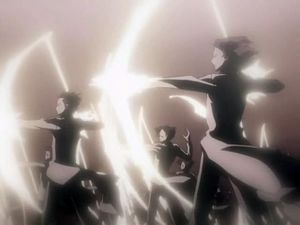

Quincy
 De: La Frikipedia, la enciclopedia extremadamente seria.
De: La Frikipedia, la enciclopedia extremadamente seria.
 Los Quincy, a punto de matarte.
Los Quincy eran los enemigos de los Shinigamis, ya que se acaban la droga primero (hacían trampa usando el Hirenkyaku, que hablaremos renglones mas abajo). Ademas, en los concursos "la mejor raza" (consistía en destruir mas hollows primero) los Quincy mataban 1000 hollows por segundo porque tenían flechas grandes y podían disparar tantas veces por segundo como puedan hacer tantas pajas por segundo. Los Quincy destruyen los hollows (por acabarse la droga de ellos), mientras los shinigamis los purifican (porque los hollows no tienen cojones para quitarle la droga). Los shinigamis se cargaron a todos los Quincy hace 200 años, aunque no exterminaron a Ishida y su padre porque "estaban ocupados matando hollows".
Historia
Aunque no lo creas, los Quincy son humanos, tu puedes ser uno :O, pero debes tener uno mínimo de drogadicción. Al contrario de los shinigami, los Quincy utilizaban la droga que encontraba a su alrededor, los shinigami ya tenían su droga preparada. Debido a que los Quincy estaban por ganar el concurso, la Sociedad de Almas decidió su exterminación para ganar el premio (juerga universal, día de descanso, follar todo el día con la asociación femenina de Shinigamis [lo último es obligatorio, aunque sea mujer.])
Los Quincy utilizan un arco para atacar, porque las espadas cuestan demasiado caras, y en la Sociedad de Almas no hacían descuento. Ellos creen que pueden hacer arcos de la nada con un guante y una cruz, por efectos de mucha droga mucho reitasu. Al principio de la serie, Ishida usa una cruz, pero en la Sociedad de Almas lo cambia por un guante para verse mas guay, pero nadie puede hacer milagros.
Los Simpsons Quincy
Solo quedan dos Quincy con vida, aprovecharon a escapar mientras los Shinigami estaban haciendo varias orgías:
- Ishida Uryuu: No hace falta que te aprendas la historia de este personaje
de relleno pero si quieres verla haz click aquí
- Ryuken Ishida:
Ryuk es un shinigami de Death Note Es el padre cabrón de Ishida, siempre discuten quien es mejor ¿El Barca o el Madrid?. Él y su hijo son los últimos Quincy (el padre pensaba que era una niña para poder violar, se llevo una gran decepción). Le dice a Ishida que le devolverá toda la droga y lo entrena para recuperar sus poderes, a cambio de no volver a ayudar a los Shinigami (es que le debe dinero, si se entera lo encuentran y lo llevan preso).
- Soken Ishida: [Muerto] Es el abuelo de Ishida, lo llevaba de putas todos los días, y también lo entrenaba con técnicas de masturbación (en realidad, las flechas azules son semen a larga cantidad). Murio cuando una manada de Hollows lo empezaron a Violar, y los shinigami estaban ocupados en varias orgías celebrando la victoria de "la mejor raza". Los Quincy no estaban admitidos, por eso ishida le tiene tanto odio a los Shinigami.
Pelea
Armas
Las armas de los Quincy son solo Arcos y flechas, las espadas esta caras, y los escudos se agotaron:
- Guante Sanrei: Este es el guante que llevo Ishida a al Sociedad de Almas para lucir mas guay y ligar con chicas Shinigami, pero se conformo con Inoue. Este guante es multi-objetos, podes llevar muchos objetos ahí, los Quincy lo utilizaban para llevar drogas y usarlo para su tecnicas de masturbación (tirar flechitas azules de semen). Para utilizarlo, tienes que hacerte la paja durante una semana, pero nunca podrás quitartelo, porque tu mano y brazo quedara lleno de semen pegajoso. En el caso de poder quitartelo, llegaras a la forma final Quincy (mucho DBZ...), pero será por poco tienpo y te quedaras esteril (tampoco te podrás hacerte la paja completa [sacando semen]).
- Quincy Bangle: Ya que el Guante no sirvió para hacerse guay, Ishida no se rinde, y en el relleno inventa un brazalete para poder hacerse la paja, y lucir mas guay (aun no lo logra). El problema, era que no era estable, si te hacías mucho la paja se podría destruir, si se fuerzan los poderes (sacar semen), podría destruirse explotando.
- Seele Schneider: (es verdad, cada nombre mas raro que el anterior) Como las espadas estaban caras, los Quincy hicieron una Flecha-Espada, con espadas lacer de Star Wars y flechas de Semen de Quincy. Puede atravesar y cortar cualquier cosa, y se dice que las Quincy la utilizaban como consolador, al tener una velocidad increíble.
- Sprenger: Son tubos de plata que al ponerlo en forma pentagonal y el enemigo en el centro hacerlo explotar y utilizar la técnica "soy guay cuando hay una explosión atrás mio no jutsu".
- anal intruder 2000, condones (usados), más condones (nuevos), lubricante, lubricante femenino, lubricante unisex con aroma pepino-melón, droga (por si no hay en el ambiente), el santo grial, la lanza del destino, los clavos de la cruz de jesucristo, un político honrado, cinco metros y medio de mecate para tendedero y un chicle (masticado)
Técnicas
A los Quincy no le da esto de hacer técnicas, así que solo hay dos:
- Hirenkyaku: esta técnica se la copiaron a los Arrancar que lo llamaron Sonido, y los Arrancar se lo copiaron a los Shinigami que lo llamaron
Shampu Shunpo, pero todo es la misma mierda. Se mueve a al velocidad de un tío con diarrea a la hora de ir al baño o de derrotar a un oponente. Lo utilizo por primera vez para salvar a Orihime de un Shinigami que la quería violar primero, la salvo se hizo el muy guay.
- Ransotengai: esta técnica esta para convertirte en títere y en titiritero a la vez ¿increíble, no?. Es para lo mas viejos para seguir haciendose la paja matando hollows.
Formas
Los Quincy también tienen formas:
- Forma Base: En esta forma visten de civiles (siempre se les encuentra algo de lefa) pero teniendo un crucifijo (aunque sean ateos, no importa) y tienen un arco común.
- Forma Quincy: Es casi igual que el de arriba, solo que tienes que llevar ropa Quincy (blanco lefa, para que no se note cuando te la casques) y puedes llevar un guante Quincy para verte mas guay.
- Forma Super
Saiyan Quincy: Solo se llega a este estado si te acabas toda la droga que tenías en el guante Quincy, estarás tan flipado que podrás hacer flechas del tamaño de un pene negro. Te sale una ala, porque dos son muy caras. El arco se vuelve color plateado y se vuelve mas grande.
- Forma Quincy Bangle: Lo mismo que un Quincy Forma Quincy, solo que con un brazalete. El traje es casi idéntico, así que no sabemos porque hacen una forma igual a otra.
- Forma Quincy
SS4 super drogadon: Lo logró hacer Ishida para presumirle a sadomasoquista que había mejorado mucho mas que el, resulta ser que el maricón se flipa tanto que le crece del brazo un arco (mezcla de droga y lefa azul)de 360º con muchos arcos alrededor inutiles porque solo dispara del central que dispara 1200 flechas de lefa super dura por segundo O.O.
Autor(es):
- Frikiman
- Roms
- Daikataro
- GonzaloQ
- Ricardoxxxlo
- Cholerito
Frikipedia 2005-2016, Licencia
GFDL 1.2 - Extraído por FrikiLeaks